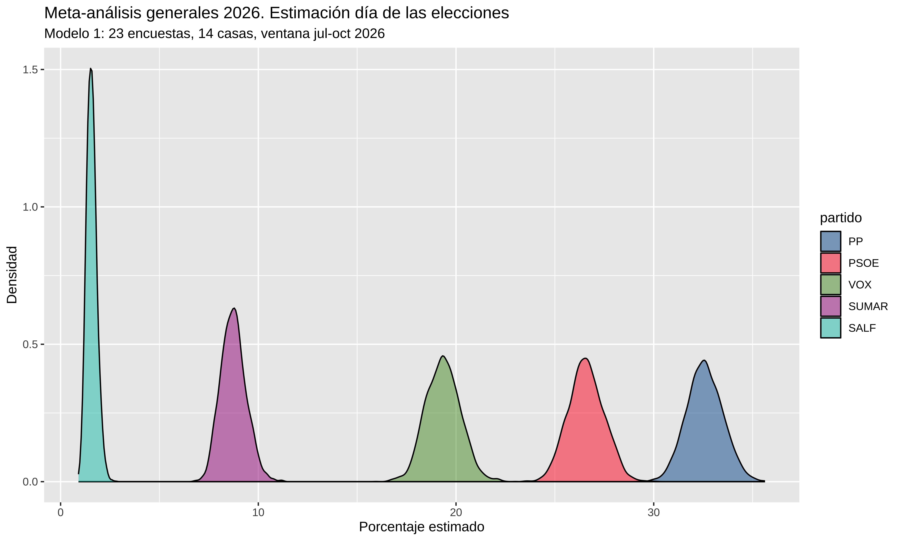
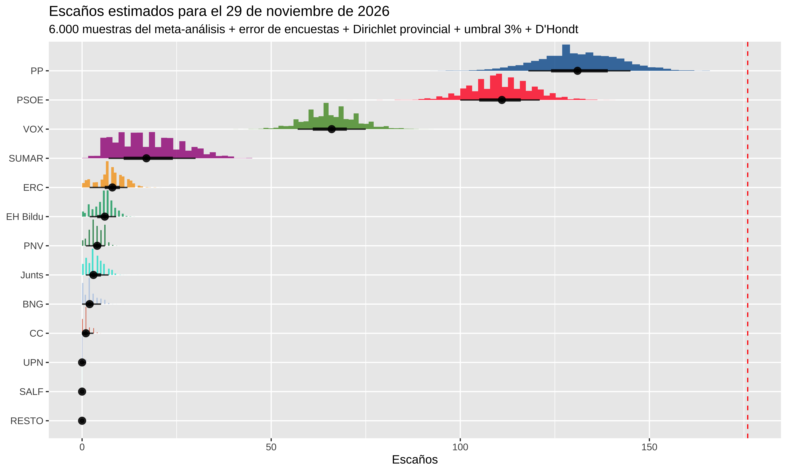
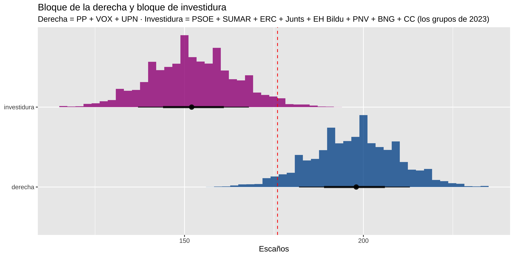

Meta-análisis bayesiano de encuestas para las generales del 29-N: dos modelos en cascada para rescatar a los partidos regionales, y D’Hondt provincia a provincia para pasar de voto a escaños
Esta es la versión corta. El post completo, con todo el código en R, está en el blog: Meta-análisis. Agregando encuestas IV. Generales 2026 (con escaños). Los scripts y los datos para reproducirlo están enlazados allí.
Ya hice metaanálisis para las generales de 2023 y las europeas de 2024, y en las andaluzas de mayo añadí la estimación de escaños. Para las generales del 29 de noviembre de 2026 el problema nuevo es doble: las encuestas nacionales no informan del voto por provincia (ni siquiera por comunidad), y la mayoría ni siquiera da estimación de los partidos regionales (PNV, BNG, Junts, ERC…), que hacen falta para repartir provincia a provincia.
El plan, en 4 pasos:
Si hubiera estimaciones de los 13 partidos en todas las encuestas, sería un multinomial de 13 categorías. Como no las hay:
El modelo 2 aprende cómo se reparte el voto dentro del bloque; el modelo 1, cuánto pesa el bloque. En la simulación se multiplican muestra a muestra y salen los 13 partidos que suman 100.
El primer intento con 185 encuestas tenía un problema: ElectoPanel, un panel continuo con releases muy frecuentes (71 encuestas, que no son 71 informaciones independientes), acumulaba un tercio del peso en el modelo 1 y el 84% en el modelo 2, porque casi es la única casa que reporta los regionales de forma sistemática.
| Ventana | M1 (encuestas, casas) | M2 (encuestas, casas) | % ElectoPanel M1 / M2 |
|---|---|---|---|
| Todo (jun 25 →) | 185, 22 | 68, 7 | 38% / 84% |
| Desde jul 2026 | 40, 16 | 14, 7 | 35% / 43% |
Decisión discutible pero tomada: ElectoPanel fuera del modelo 1 (sobran encuestas de otras casas y un panel con tanto peso solo metería inercia), dentro del modelo 2 (sin él, la composición del bloque se estimaría con un puñado de encuestas). El CIS también queda fuera del modelo 1, por su cocina electoral; quizá lo meta más tarde con una estimación propia a partir de sus microdatos.
Cada encuesta se convierte en conteos: porcentaje por tamaño muestral publicado. Un multinomial con el PP de referencia, donde para cada categoría el log-odds frente al PP es
con los días desde el 1 de julio de 2026, la tendencia diaria común y el efecto casa: el sesgo sistemático de cada encuestadora, que con la estructura jerárquica se encoge para las casas con pocas encuestas y aflora en las que publican a menudo.
Asunción clave: los efectos casa están centrados en 0, así que el modelo estima la media de las encuestadoras, no el resultado real. Si todas se equivocan en la misma dirección, no hay forma de verlo. La calibración por casa con elecciones pasadas queda pendiente; aquí va una versión tosca agregada (ver abajo).
Ajuste: 4 cadenas × 4.000 iteraciones con cmdstanr, convergencia limpia (Rhat máx. 1.002, 0 divergentes).
El modelo ve una carrera plana desde julio: el cambio mediano más grande entre hoy y el día E es de 0.6 puntos y ningún intervalo al 95% se separa del 0. PP, PSOE y demás están donde estaban en verano.
La estimación para el día de las elecciones (efectos casa en su media), con IC al 90%:
| partido | mediana | IC 90% |
|---|---|---|
| PP | 32.6 | [31.1, 34.1] |
| PSOE | 26.6 | [25.1, 28.1] |
| VOX | 19.3 | [18.0, 20.8] |
| SUMAR | 8.7 | [7.7, 9.8] |
| SALF | 1.6 | [1.2, 2.0] |
| BLOQUE (regionales + resto) | 11.2 | [10.2, 12.3] |

El modelo 2 (la composición del bloque) no lleva efecto casa —en su ventana casi solo reporta ElectoPanel— y lleva la ventana larga desde junio de 2025, porque con 14 encuestas en tres meses no hay de dónde colgar una tendencia.
En España los escaños se reparten provincia a provincia con D’Hondt y umbral del 3% por circunscripción. Tres ingredientes:
1. El truco de la distribución provincial. Si en 2023 ERC sacó en Barcelona 6.5 veces su media nacional, asumo que ese desvío se mantiene: , con el ratio provincial del 23-J, y luego normalizo dentro de la provincia. Excepción: SALF no existía en 2023, así que su geografía sale de las Europeas de 2024, su única cita con las urnas.
2. El ruido Dirichlet. Si aplicara los ratios del 23-J tal cual, la geografía de 2026 sería un calco de la de 2023. Así que cada provincia “revota” el 23-J con una muestra de ~500 votantes equivalentes: una Dirichlet centrada en los porcentajes de 2023 con concentración votos/1.000. En media el ratio no cambia; lo que añade es dispersión. Granada (520.000 votos) tiene una desviación típica de 0.07 en su ratio; Soria (52.000), de 0.20. Y es en las provincias pequeñas, donde se reparten 2-3 escaños, donde ese ruido decide si un partido entra o se queda fuera.
3. El error histórico de las encuestas. Comparo resultado real con la media de las encuestas de últimos días de campaña en las cinco últimas generales (124 encuestas de los anexos de Wikipedia). El único sesgo consistente es el PSOE: +1.3 puntos (positivo en 4 de 5 elecciones). A cada muestra se le suma un error con esa media, desviaciones típicas de 1.3 a 2.6 puntos por partido y una correlación PP–VOX de +0.5: cuando las encuestas se pasan con el bloque del PP, se pasan también con VOX (correlación empírica +0.92, encogida a +0.5 con n = 3).
Detalle que aprendí respecto a Andalucía: allí puse ρ(PP, VOX) = −0.5 pensando en el trasvase de voto útil, pero el trasvase es dinámica de campaña y eso ya lo capturan las pendientes temporales del modelo. Esta capa va sobre otra cosa: cómo se equivocan en bloque las encuestas el día de la votación.
Y dos trampas del agregado: el umbral del 3% por provincia es mucho mayor que el legal en circunscripciones pequeñas, y el RESTO como categoría agregada gana escaños fantasma con D’Hondt (sus votos van a no representados).
Validación: dando a la simulación los porcentajes reales del 23-J, reproduce los escaños oficiales exactos, escaño por escaño.
6.000 muestras: posterior del meta-análisis + error de encuestas + Dirichlet provincial + umbral 3% + D’Hondt. Mediana e IC 80%:
| partido | escaños | IC 80% |
|---|---|---|
| PP | 131 | [118, 145] |
| PSOE | 111 | [100, 121] |
| VOX | 66 | [57, 75] |
| SUMAR | 17 | [7, 30] |
| ERC | 8 | [2, 12] |
| EH Bildu | 6 | [2, 9] |
| PNV | 4 | [1, 6] |
| Junts | 3 | [1, 7] |
| BNG | 2 | [0, 5] |
| CC | 1 | [0, 3] |

La lectura: PP + VOX tendrían la mayoría con probabilidad 96.3% — mediana de 198 escaños para la suma — y el PP solo se queda a 45 escaños de la mayoría. Que el PP gobierne solo tiene probabilidad 0.0%, y de que sume la izquierda, 2.9%.
Es la capa de error histórico la que baja esa probabilidad del ~100% que daban los posteriors a secas: si las encuestas se vuelven a equivocar como en las últimas cinco elecciones, el margen ya no sobra. Nada de esto es una predicción: es una fotografía de lo que dicen las encuestas disponibles.
En bloques: el bloque de investidura de 2023 (PSOE + SUMAR + ERC + Junts + EH Bildu + PNV + BNG + CC) contra la derecha (PP + VOX + UPN). Si las encuestas no se mueven, la aritmética de la anterior legislatura no llega para repetir la investidura.

Todo el código, paso a paso, en el post completo del blog.